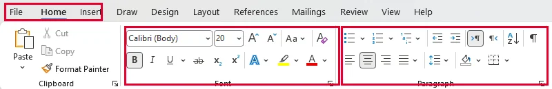
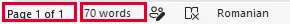
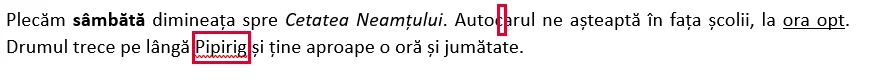
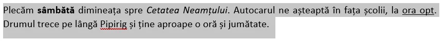
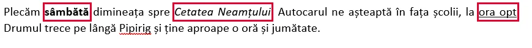
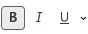
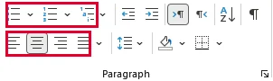
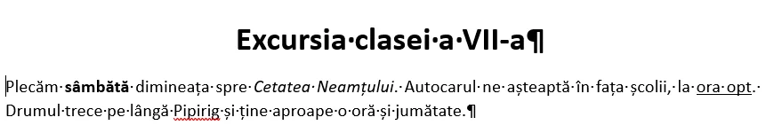
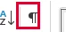
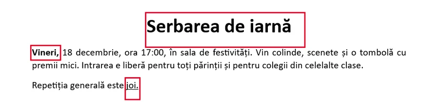

<!doctype html>
<html lang="ro">
<meta charset="utf-8">
<meta name="viewport" content="width=device-width, initial-scale=1, viewport-fit=cover">
<title>Misiunea Tehnoredactor</title>
<meta name="description" content="Word: cursor, selecție, caractere, paragrafe, reguli de tehnoredactare și afișul clasei.">
<link rel="preconnect" href="https://fonts.googleapis.com">
<link rel="preconnect" href="https://fonts.gstatic.com" crossorigin>
<link rel="stylesheet" href="https://fonts.googleapis.com/css2?family=Bricolage+Grotesque:opsz,wght@12..96,600;12..96,800&family=Literata:ital,opsz,wght@0,7..72,400;0,7..72,600;1,7..72,400&family=JetBrains+Mono:wght@500&display=swap">
<style>
:root{
  --desk:#E3E7EE; --paper:#FFFFFF; --paper2:#F4F6FA; --ink:#18202E; --ink2:#586377; --rule:#CCD3DE;
  --accent:#2F55D4; --accentInk:#FFFFFF; --mark:#FFE45C; --markInk:#18202E;
  --ok:#1C8A4B; --okbg:#E2F4E9; --bad:#CC3434; --badbg:#FBE6E6; --sel:#C9D8FF;
  --shadow:0 1px 2px rgba(20,32,56,.08),0 10px 30px rgba(20,32,56,.10);
  --fd:"Bricolage Grotesque","Segoe UI",system-ui,sans-serif;
  --fb:"Literata",Georgia,"Times New Roman",serif;
  --fm:"JetBrains Mono",Consolas,"Courier New",monospace;
}
@media (prefers-color-scheme:dark){:root:not([data-theme="light"]){
  --desk:#0E1219; --paper:#1A2029; --paper2:#222936; --ink:#E6E9F0; --ink2:#9CA6B8; --rule:#323B4B;
  --accent:#86A0FF; --accentInk:#0E1219; --mark:#F2D23A; --markInk:#18202E;
  --ok:#52C98B; --okbg:#163324; --bad:#FF7272; --badbg:#3B1D20; --sel:#2C3F78;
  --shadow:0 1px 2px rgba(0,0,0,.3),0 10px 30px rgba(0,0,0,.35);
}}
:root[data-theme="dark"]{
  --desk:#0E1219; --paper:#1A2029; --paper2:#222936; --ink:#E6E9F0; --ink2:#9CA6B8; --rule:#323B4B;
  --accent:#86A0FF; --accentInk:#0E1219; --mark:#F2D23A; --markInk:#18202E;
  --ok:#52C98B; --okbg:#163324; --bad:#FF7272; --badbg:#3B1D20; --sel:#2C3F78;
  --shadow:0 1px 2px rgba(0,0,0,.3),0 10px 30px rgba(0,0,0,.35);
}
*{box-sizing:border-box}
body{margin:0;background:var(--desk);color:var(--ink);font-family:var(--fb);font-size:17px;line-height:1.6;padding-inline:16px;padding-block:0 48px}
button{font:inherit;color:inherit;cursor:pointer}
button:focus-visible,input:focus-visible{outline:3px solid var(--accent);outline-offset:2px}
kbd{font-family:var(--fm);font-size:.78em;background:var(--paper2);border:1px solid var(--rule);border-bottom-width:2px;border-radius:4px;padding:.05em .4em;white-space:nowrap}
mark{background:var(--mark);color:var(--markInk);padding:0 .15em;border-radius:2px}

.hud{position:sticky;top:env(safe-area-inset-top,0px);z-index:5;margin-inline:-16px;padding:10px 16px;background:color-mix(in srgb,var(--desk) 88%,transparent);backdrop-filter:blur(8px);border-bottom:1px solid var(--rule)}
.hud-in{max-width:780px;margin:0 auto;display:flex;align-items:center;gap:12px;flex-wrap:wrap}
.brand{font-family:var(--fd);font-weight:800;font-size:1rem;letter-spacing:-.01em;background:none;border:0;padding:0}
.brand b{color:var(--accent)}
.hud-stats{margin-left:auto;display:flex;gap:8px;flex-wrap:wrap;font-family:var(--fm);font-size:.8rem}
.chip{background:var(--paper);border:1px solid var(--rule);border-radius:999px;padding:2px 10px;font-variant-numeric:tabular-nums;white-space:nowrap}
.chip.hot{background:var(--mark);color:var(--markInk);border-color:transparent}

main{max-width:780px;margin:24px auto 0}
.crumbs{max-width:780px;margin:14px auto -10px;display:flex;flex-wrap:wrap;align-items:center;gap:2px 8px;font-family:var(--fm);font-size:.78rem;color:var(--ink2);line-height:1.4}
.crumbs a{color:var(--ink2);text-underline-offset:3px;text-decoration-color:var(--rule)}
.crumbs a:hover{color:var(--accent)}
.crumbs .sep{color:var(--rule)}
.crumbs .cur{color:var(--ink);font-weight:600}
.page{background:var(--paper);box-shadow:var(--shadow);border-radius:3px;position:relative;overflow:hidden}
.ruler{height:22px;background:
  repeating-linear-gradient(90deg,var(--ink2) 0 1px,transparent 1px 38px) 0 100%/100% 9px no-repeat,
  repeating-linear-gradient(90deg,var(--rule) 0 1px,transparent 1px 19px) 0 100%/100% 5px no-repeat,
  var(--paper2);border-bottom:1px solid var(--rule);padding-left:48px}
.sheet{padding:28px clamp(18px,6vw,64px) 36px}
.eyebrow{font-family:var(--fm);font-size:.72rem;letter-spacing:.12em;text-transform:uppercase;color:var(--ink2)}
h1,h2,h3{font-family:var(--fd);text-wrap:balance;letter-spacing:-.02em;line-height:1.1;margin:0}
h1{font-size:clamp(2.1rem,7vw,3.4rem);font-weight:800}
h2{font-size:clamp(1.5rem,4.5vw,2.1rem);font-weight:800}
h3{font-size:1.2rem;font-weight:600}
.caret{display:inline-block;width:.08em;height:.9em;background:var(--accent);margin-left:.06em;vertical-align:-.05em;animation:blink 1.05s steps(1) infinite}
@keyframes blink{50%{opacity:0}}
.lede{max-width:60ch;color:var(--ink2);margin:14px 0 0}
.stack{display:flex;flex-direction:column;gap:18px}
.reading{max-width:64ch}
.reading p{margin:0 0 .8em}
.reading ul{margin:0 0 .8em;padding-left:1.2em}
.reading li{margin:.2em 0}
.pil{color:var(--ink2);font-family:var(--fb)}

.namerow{display:flex;gap:10px;flex-wrap:wrap;align-items:center;margin-top:22px}
.namerow label{font-family:var(--fm);font-size:.8rem;color:var(--ink2)}
.namerow input{font:inherit;font-size:1rem;padding:8px 12px;border:1px solid var(--rule);border-radius:6px;background:var(--paper2);color:var(--ink);min-width:0;flex:1 1 220px;max-width:340px}

.toc{margin-top:28px;display:flex;flex-direction:column}
.toc-h{font-family:var(--fd);font-weight:600;font-size:1.05rem;margin-bottom:6px}
.toc-row{display:flex;align-items:baseline;gap:10px;width:100%;text-align:left;background:none;border:0;padding:11px 6px;border-radius:6px}
.toc-row:hover:not([disabled]){background:var(--paper2)}
.toc-row[disabled]{cursor:not-allowed;opacity:.5}
.toc-n{font-family:var(--fm);font-size:.8rem;color:var(--ink2);width:4.2em;flex:none}
.toc-t{font-weight:600}
.toc-lead{flex:1;border-bottom:2px dotted var(--rule);transform:translateY(-4px);min-width:20px}
.toc-s{font-family:var(--fm);font-size:.85rem;white-space:nowrap;color:var(--ink2)}
.toc-s .on{color:var(--accent)}

.btn{text-decoration:none;color:inherit;display:inline-flex;align-items:center;gap:8px;border-radius:8px;padding:10px 18px;border:1px solid var(--rule);background:var(--paper);font-family:var(--fd);font-weight:600;font-size:1rem}
.btn.primary{background:var(--accent);color:var(--accentInk);border-color:transparent}
.btn.ghost{background:transparent}
.btn[disabled]{opacity:.45;cursor:not-allowed}
.row{display:flex;gap:10px;flex-wrap:wrap;align-items:center}

.progress{display:flex;gap:6px;margin:14px 0 4px}
.progress i{flex:1;height:5px;border-radius:3px;background:var(--rule)}
.progress i.done{background:var(--ok)}
.progress i.now{background:var(--accent)}

.q{font-size:1.15rem;font-weight:600;max-width:60ch;margin:0}
/* capturi din aplicația reală (README §6b), copiate din _motor/motor.css: jocul nu încarcă motor.css */
.captura{margin:.4em 0 1em;max-width:100%}
.captura a{display:block;line-height:0}
.captura img{display:block;max-width:100%;height:auto;border:1px solid var(--rule);border-radius:6px;background:#fff;box-shadow:var(--shadow);cursor:zoom-in}
.captura figcaption{font-size:.9rem;line-height:1.4;color:var(--ink2);margin-top:.4em;font-weight:400}
.captura figcaption b{color:var(--ink)}
.q .captura{margin:.6em 0 0}
.q .captura img{max-height:260px;width:auto}
.opts{display:grid;grid-template-columns:repeat(auto-fit,minmax(230px,1fr));gap:10px}
.opt{text-align:left;padding:12px 14px;border-radius:8px;border:1px solid var(--rule);background:var(--paper2);line-height:1.35}
.opt:hover:not([disabled]){border-color:var(--accent)}
.opt.ok{background:var(--okbg);border-color:var(--ok)}
.opt.bad{background:var(--badbg);border-color:var(--bad);text-decoration:underline wavy var(--bad);text-underline-offset:4px}
.opt[disabled]{cursor:default}
.code{font-family:var(--fm);font-size:1.02em}

.fb{border-radius:8px;padding:12px 14px;line-height:1.5}
.fb.ok{background:var(--okbg);border-left:4px solid var(--ok)}
.fb.bad{background:var(--badbg);border-left:4px solid var(--bad)}
.fb strong{font-family:var(--fd)}

.peek{border:1px dashed var(--rule);border-radius:8px;padding:12px 16px;background:var(--paper2);font-size:.95rem}
.peek[hidden]{display:none}

/* ordonare */
.pool,.slots{display:flex;flex-direction:column;gap:8px}
.slot{display:flex;gap:10px;align-items:center;padding:10px 12px;border:1px dashed var(--rule);border-radius:8px;min-height:46px;color:var(--ink2)}
.slot.full{border-style:solid;color:var(--ink);background:var(--paper2)}
.slot b{font-family:var(--fm);font-size:.8rem;color:var(--accent)}
.twocol{display:grid;grid-template-columns:repeat(auto-fit,minmax(260px,1fr));gap:16px}
.lbl{font-family:var(--fm);font-size:.72rem;letter-spacing:.1em;text-transform:uppercase;color:var(--ink2);margin-bottom:6px}

/* vanatoare */
.hunt{font-size:1.12rem;line-height:2.3;background:var(--paper2);border:1px solid var(--rule);border-radius:8px;padding:14px 16px}
.tk{background:none;border:0;padding:2px 0;border-radius:3px;font-family:var(--fb)}
.tk.sp{color:var(--ink2);padding:2px 3px;font-weight:600}
.tk:hover{background:var(--sel)}
.tk.marked{text-decoration:underline wavy var(--bad);text-decoration-thickness:2px;text-underline-offset:6px;background:var(--badbg)}
.tk.found{text-decoration:underline wavy var(--ok);background:var(--okbg)}

/* editor */
.tb{display:flex;flex-wrap:wrap;gap:4px;align-items:center;padding:6px;background:var(--paper2);border:1px solid var(--rule);border-radius:8px 8px 0 0}
.tb button{min-width:36px;height:36px;border:1px solid transparent;border-radius:5px;background:none;font-family:var(--fm);font-size:.95rem;display:inline-flex;align-items:center;justify-content:center;padding:0 8px}
.tb button:hover{border-color:var(--rule);background:var(--paper)}
.tb button.act{background:var(--sel);border-color:var(--accent)}
.tb .sep{width:1px;height:24px;background:var(--rule);margin:0 4px}
.tb .size{font-family:var(--fm);font-size:.85rem;min-width:52px;text-align:center;font-variant-numeric:tabular-nums}
.al{display:inline-block;width:16px;height:12px;background:
  linear-gradient(currentColor 0 0) var(--p1) 0/var(--w1) 2px no-repeat,
  linear-gradient(currentColor 0 0) var(--p2) 5px/var(--w2) 2px no-repeat,
  linear-gradient(currentColor 0 0) var(--p1) 10px/var(--w1) 2px no-repeat}
.doc{border:1px solid var(--rule);border-top:0;border-radius:0 0 8px 8px;padding:16px 18px;background:var(--paper);min-height:120px;font-family:"Times New Roman",Times,serif;color:var(--ink)}
.doc.model{border-top:1px solid var(--rule);border-radius:8px;background:var(--paper2);pointer-events:none}
.doc p{margin:0 0 .5em;line-height:1.45}
.w{border-radius:2px;cursor:pointer}
.w.on{background:var(--sel);box-shadow:0 0 0 2px var(--sel)}
.pm{color:var(--ink2);font-family:var(--fb);cursor:pointer;font-size:14px;padding:0 4px;border-radius:3px;background:none;border:0;vertical-align:baseline}
.pm:hover{background:var(--sel)}
.hint{font-size:.88rem;color:var(--ink2)}
.toast{font-family:var(--fm);font-size:.82rem;color:var(--bad);min-height:1.3em}

.end-stars{font-size:3rem;letter-spacing:.1em;color:var(--accent);line-height:1}
.end-stars .off{color:var(--rule)}
.diploma{border:2px solid var(--ink);outline:1px solid var(--ink);outline-offset:5px;padding:28px 22px;text-align:center;margin:10px}
.diploma .nm{font-family:var(--fd);font-size:clamp(1.6rem,6vw,2.4rem);font-weight:800;margin:10px 0}
.facts{display:flex;justify-content:center;gap:24px;flex-wrap:wrap;font-family:var(--fm);font-size:.9rem;font-variant-numeric:tabular-nums}
.check li{margin:.35em 0}

/* bara de sus auto-restrânsă pe mobil (tiparul din uneltele de repartizare, 20.08.2026):
   derularea în jos o restrânge, revenirea e doar manuală (▾ sau tragere în jos pe bară) */
.pulldown{display:none;background:none;border:0;font-size:1.1rem;line-height:1;padding:4px 8px;color:var(--ink2);border-radius:6px}
@media (max-width:600px){
  .hud{padding-block:8px}
  .hud-in{gap:6px 10px}
  .brand{font-size:.92rem}
  .hud-stats{font-size:.72rem;gap:6px}
  body.hdr-collapsed .hud{padding-block:3px}
  body.hdr-collapsed .brand{display:none}
  body.hdr-collapsed .hud-in{flex-wrap:nowrap}
  body.hdr-collapsed .hud-stats{margin-left:0;flex-wrap:nowrap;overflow:hidden;font-size:.68rem}
  body.hdr-collapsed .chip{padding:0 8px}
  body.hdr-collapsed .pulldown{display:inline-flex;margin-left:auto}
  body.hdr-collapsed .hud-in{touch-action:none}
}
@media (prefers-reduced-motion:reduce){.caret{animation:none}}
</style>

<header class="hud"><div class="hud-in">
  <button class="brand" id="go-home" type="button">Misiunea <b>Tehnoredactor</b></button>
  <div class="hud-stats" id="hud"></div>
  <button class="pulldown" id="hdr-pull" type="button" aria-label="Arată bara de sus" title="Arată bara de sus">▾</button>
</div></header>
<nav class="crumbs" aria-label="Unde ești"><a href="../../hub/index.html">🏠 LearningHub</a><span class="sep" aria-hidden="true">›</span><a href="../index.html">Jocuri TIC</a><span class="sep" aria-hidden="true">›</span><a href="../index.html#clasa-VII">Clasa a VII-a</a><span class="sep" aria-hidden="true">›</span><span class="cur" aria-current="page">Misiunea Tehnoredactor</span></nav>
<main id="app"></main>

<script>
(function(){
const SIZES=[11,14,18,24];
const KEY='misiunea_tehnoredactor_vii';

/* ---------- conținut ---------- */
const LEVELS=[
{t:'Primul contact',text:`
<p><strong>Microsoft Word</strong> este un <mark>procesor de text</mark>: un program cu care scrii, corectezi și aranjezi documente — o compunere, o invitație, un afiș. Documentul se salvează de obicei ca fișier cu extensia <mark>.docx</mark>.</p>
<p>Sus se află <strong>Panglica</strong> (în engleză <em>Ribbon</em>), împărțită în <strong>file</strong>: Fișier, Pornire, Inserare și altele. Butoanele folosite cel mai des — fontul, mărimea, aldinul, alinierea — stau pe fila <mark>Pornire</mark> (<em>Home</em>).</p>
<p>Jos, pe <strong>bara de stare</strong>, Word îți arată la ce pagină ești și câte cuvinte are documentul.</p>
<p>Un document nou îl <strong>creezi</strong> cu <kbd>Ctrl</kbd>+<kbd>N</kbd>, unul salvat îl <strong>deschizi</strong> cu <kbd>Ctrl</kbd>+<kbd>O</kbd>, iar cu <kbd>Ctrl</kbd>+<kbd>W</kbd> îl <strong>închizi</strong>.</p>
<p>Salvezi cu <kbd>Ctrl</kbd>+<kbd>S</kbd>. Prima dată, Word te întreabă numele și locul fișierului. <mark>Salvare ca</mark> (<em>Save As</em>) face un fișier nou: alt nume, alt loc sau alt format.</p>
<figure class="captura"><a href="../word-vii/img/panglica-file.webp" target="_blank"></a><figcaption>Sus, <b>filele</b> panglicii: <b>Fișier (File)</b>, <b>Pornire (Home)</b>, <b>Inserare (Insert)</b>… Pe fila Pornire stau grupurile <b>Font</b> și <b>Paragraf (Paragraph)</b>.</figcaption></figure>
<figure class="captura"><a href="../word-vii/img/bara-stare.webp" target="_blank"></a><figcaption><b>Bara de stare</b>, jos de tot: pagina la care ești (<em>Page 1 of 1</em>) și câte cuvinte are documentul (<em>70 words</em>).</figcaption></figure>`,
qs:[
 {t:'choice',q:'Ce extensie are, de obicei, un document Word salvat azi?',o:['.txt','.docx','.pptx','.xlsx'],ok:1,why:'.docx = Word. .pptx e PowerPoint, .xlsx e Excel, iar .txt e text simplu, fără formatare.'},
 {t:'choice',q:'Vrei să faci un cuvânt aldin (îngroșat). Pe ce filă cauți butonul?<figure class="captura"><a href="../word-vii/img/file-panglica.webp" target="_blank"></a><figcaption><b>Filele</b> panglicii din Word.</figcaption></figure>',o:['Fișier','Pornire','Inserare','Pe bara de stare'],ok:1,why:'Formatările de zi cu zi — font, mărime, aldin, aliniere — sunt pe fila Pornire.'},
 {t:'tf',q:'Bara de stare, din partea de jos a ferestrei, îți poate arăta câte cuvinte are documentul.',ok:true,why:'Da. Tot acolo vezi și pagina la care ești.'},
 {t:'choice',q:'Ai compunerea „Toamna.docx” și vrei o copie numită „Toamna_final.docx”, fără să pierzi originalul. Ce folosești?',o:['Ctrl+S','Salvare ca','Ctrl+Z','Închizi Word'],ok:1,why:'Ctrl+S salvează peste același fișier. Salvare ca creează un fișier nou, iar originalul rămâne neschimbat.'},
 {t:'choice',q:'Ieri ai salvat „Toamna.docx” în folderul clasei. Azi vrei să mai scrii la ea. Ce scurtătură folosești întâi?',o:['Ctrl+N','Ctrl+W','Ctrl+O','Ctrl+Y'],ok:2,why:'Ctrl+O deschide un document salvat. Ctrl+N ți-ar da o foaie nouă, goală, iar Ctrl+W închide documentul deschis.'},
 {t:'tf',q:'Ctrl+N creează un document nou, gol, iar Ctrl+W închide documentul la care lucrezi.',ok:true,why:'Adevărat. N vine de la „New” (nou), iar Ctrl+W închide documentul. Dacă ai modificări nesalvate, salvează-le întâi cu Ctrl+S.'}
]},
{t:'Scriu și corectez',text:`
<p>Linia verticală care clipește se numește <mark>cursor</mark> (punct de inserare): acolo apare ce tastezi.</p>
<p><kbd>Backspace</kbd> șterge caracterul din <strong>stânga</strong> cursorului. <kbd>Delete</kbd> șterge caracterul din <strong>dreapta</strong> lui.</p>
<p>Când rândul se umple, Word trece <strong>singur</strong> pe rândul următor. Apeși <kbd>Enter</kbd> doar când vrei un <mark>paragraf nou</mark>.</p>
<p>Ai greșit? <kbd>Ctrl</kbd>+<kbd>Z</kbd> anulează ultima acțiune, iar <kbd>Ctrl</kbd>+<kbd>Y</kbd> o reface.</p>
<p>O <strong>linie roșie ondulată</strong> sub un cuvânt înseamnă că Word <em>crede</em> că e scris greșit. Verifică singur: uneori Word pur și simplu nu cunoaște cuvântul — de exemplu, un nume de localitate.</p>
<figure class="captura"><a href="../word-vii/img/cursor-corectura.webp" target="_blank"></a><figcaption><b>Cursorul</b> e linia subțire dintre litere: acolo apare ce tastezi. Mai jos, numele <b>Pipirig</b> are <b>linie roșie ondulată</b> — Word nu cunoaște cuvântul, dar el e scris corect.</figcaption></figure>`,
qs:[
 {t:'choice',q:'Cursorul stă aici: <span class="code">maș|ina</span>. Apeși o dată Backspace. Ce rămâne?',o:['maina','mașna','mașin','mașina'],ok:0,why:'Backspace șterge la stânga cursorului, adică litera „ș”.'},
 {t:'choice',q:'Același cuvânt, cursorul tot în <span class="code">maș|ina</span>. Apeși o dată Delete. Ce rămâne?',o:['maina','mașna','ina','mașin'],ok:1,why:'Delete șterge la dreapta cursorului, adică litera „i”.'},
 {t:'tf',q:'La capătul fiecărui rând trebuie să apeși Enter, altfel textul iese din pagină.',ok:false,why:'Fals. Word trece singur pe rândul următor. Enter pornește un paragraf nou.'},
 {t:'choice',q:'Ai șters din greșeală un paragraf întreg. Care e cea mai rapidă salvare?',o:['Ctrl+Z','Ctrl+Y','Rescrii paragraful','Închizi fără să salvezi'],ok:0,why:'Ctrl+Z anulează ultima acțiune. Ctrl+Y ar reface doar ceva ce ai anulat deja.'},
 {t:'tf',q:'Numele „Bicaz” e subliniat cu roșu. Asta înseamnă sigur că e scris greșit.',ok:false,why:'Fals. Linia roșie arată doar că Word nu recunoaște cuvântul. Numele proprii apar des așa.'}
]},
{t:'Selectez ca un pro',text:`
<p>Înainte să schimbi cum arată un text, îi arăți lui Word <strong>care</strong> text: îl <mark>selectezi</mark>. Textul selectat apare pe un fundal colorat.</p>
<ul>
<li><strong>dublu-clic</strong> pe un cuvânt → selectezi cuvântul;</li>
<li><strong>triplu-clic</strong> într-un paragraf → selectezi tot paragraful;</li>
<li><strong>clic și tragi</strong> cu mouse-ul → selectezi cât vrei;</li>
<li><kbd>Shift</kbd> + <strong>săgeți</strong> → mărești selecția de la tastatură.</li>
</ul>
<p>Cu textul selectat: <kbd>Ctrl</kbd>+<kbd>C</kbd> <strong>copiază</strong> (originalul rămâne), <kbd>Ctrl</kbd>+<kbd>X</kbd> <strong>decupează</strong> (textul dispare și așteaptă să fie lipit), <kbd>Ctrl</kbd>+<kbd>V</kbd> <strong>lipește</strong> acolo unde e cursorul.</p>
<figure class="captura"><a href="../word-vii/img/selectie-paragraf.webp" target="_blank"></a><figcaption>Un <b>paragraf întreg selectat</b> (aici cu triplu-clic): se vede fundalul colorat peste tot textul. Abia acum are rost să apeși un buton de formatare.</figcaption></figure>`,
qs:[
 {t:'choice',q:'Cum selectezi repede un paragraf întreg?',o:['Dublu-clic pe un cuvânt','Triplu-clic în paragraf','Un singur clic','Apeși Enter'],ok:1,why:'Dublu-clicul ia un cuvânt, triplu-clicul ia tot paragraful.'},
 {t:'choice',q:'Dai dublu-clic pe cuvântul „pisica”. Ce se selectează?',o:['Litera pe care ai dat clic','Cuvântul „pisica”','Tot rândul','Tot documentul'],ok:1,why:'Dublu-clicul selectează exact cuvântul.'},
 {t:'choice',q:'Care e diferența dintre Ctrl+C și Ctrl+X?',o:['Ctrl+C lasă textul pe loc, Ctrl+X îl scoate de acolo','Sunt la fel, amândouă copiază textul','Ctrl+X copiază, iar Ctrl+C decupează textul','Ctrl+C lipește textul acolo unde e cursorul'],ok:0,why:'Copiezi când vrei textul în două locuri. Decupezi când vrei să-l muți.'},
 {t:'order',q:'Vrei să muți ultima propoziție la începutul textului. Pune pașii în ordine.',items:['Selectezi propoziția','Apeși Ctrl+X','Dai clic la începutul textului','Apeși Ctrl+V'],why:'Selectezi → decupezi → pui cursorul unde vrei → lipești.'}
]},
{t:'Caractere',text:`
<p>Formatarea <strong>caracterelor</strong> schimbă cum arată literele:</p>
<ul>
<li><mark>fontul</mark> (tipul de literă), de exemplu Arial sau Times New Roman;</li>
<li><mark>dimensiunea</mark>, măsurată în <strong>puncte (pt)</strong>: cu cât numărul e mai mare, cu atât literele sunt mai mari;</li>
<li><strong>Aldin</strong> (butonul <strong>B</strong>, <em>Bold</em>), <em>Cursiv</em> (butonul <em>I</em>, <em>Italic</em>), <u>Subliniere</u> (butonul <u>U</u>, <em>Underline</em>);</li>
<li><strong>culoarea fontului</strong> și <strong>evidențierea</strong> — ca un marker peste text.</li>
</ul>
<p>Scurtături: <kbd>Ctrl</kbd>+<kbd>B</kbd>, <kbd>Ctrl</kbd>+<kbd>I</kbd>, <kbd>Ctrl</kbd>+<kbd>U</kbd>. Ține mouse-ul deasupra unui buton: Word îți arată numele lui și scurtătura.</p>
<p>Regula de aur: <mark>întâi selectezi, apoi formatezi</mark>.</p>
<figure class="captura"><a href="../word-vii/img/grup-font.webp" target="_blank"></a><figcaption>Grupul <b>Font</b> de pe fila <b>Pornire (Home)</b>: caseta cu numele fontului, caseta cu mărimea în puncte și butoanele <b>B</b> (aldin), <b>I</b> (cursiv), <b>U</b> (subliniere), încadrate.</figcaption></figure>
<figure class="captura"><a href="../word-vii/img/text-formatat.webp" target="_blank"></a><figcaption>Același rând, cu trei formatări diferite: <b>sâmbătă</b> e aldin, <em>Cetatea Neamțului</em> e cursiv, iar <u>ora opt</u> e subliniat.</figcaption></figure>`,
qs:[
 {t:'choice',q:'În ce se măsoară dimensiunea literelor în Word?',o:['Centimetri','Puncte (pt)','Procente','Kilobyți'],ok:1,why:'Mărimea fontului se dă în puncte: 11 pt, 14 pt, 24 pt…'},
 {t:'choice',q:'Care dintre aceste mărimi face literele cele mai mari?',o:['11 pt','14 pt','24 pt','9 pt'],ok:2,why:'Numărul mai mare înseamnă litere mai mari.'},
 {t:'choice',q:'Ce face butonul <em>I</em>?<figure class="captura"><a href="../word-vii/img/buton-biu.webp" target="_blank"></a><figcaption>Butoanele <b>B</b>, <b>I</b> și <b>U</b> din grupul Font.</figcaption></figure>',o:['Aldin','Cursiv','Subliniere','Inserează o imagine'],ok:1,why:'I vine de la Italic, adică scris cursiv (înclinat).'},
 {t:'editor',q:'Fă-l pe „Atenție!” aldin și pe „Mâine” subliniat, ca în model.',
  start:['Atenție! Mâine avem lucrare la TIC.'],
  goal:d=>{d[0].w[0].b=1;d[0].w[1].u=1;},
  why:'Ai selectat fiecare cuvânt și ai aplicat formatarea doar lui.'}
]},
{t:'Paragrafe',text:`
<p>Un <mark>paragraf</mark> e tot textul scris până apeși <kbd>Enter</kbd>. Dacă apeși butonul <strong>Afișare/ascundere ¶</strong>, Word pune semnul <span class="pil">¶</span> la finalul fiecărui paragraf.</p>
<p>Formatarea paragrafului se aplică <strong>întregului paragraf</strong>:</p>
<ul>
<li><strong>alinierea</strong>: la stânga, centrat, la dreapta sau <mark>stânga-dreapta</mark> (<em>Justify</em>) — ambele margini drepte, ca în cărți;</li>
<li><strong>spațierea</strong> dintre rânduri;</li>
<li><strong>listele</strong>: cu <strong>marcatori</strong> (•) când ordinea nu contează, <strong>numerotate</strong> (1, 2, 3) când ordinea contează.</li>
</ul>
<p>Titlul se centrează cu <strong>butonul de aliniere</strong>, nu apăsând bara de spațiu de multe ori.</p>
<figure class="captura"><a href="../word-vii/img/grup-paragraf.webp" target="_blank"></a><figcaption>Grupul <b>Paragraf (Paragraph)</b>: sus, butoanele de <b>liste</b> (cu marcatori și numerotată); jos, cele patru <b>alinieri</b> — stânga, centrat, dreapta, stânga-dreapta.</figcaption></figure>`,
qs:[
 {t:'choice',q:'Ce aliniere face ca textul să aibă ambele margini drepte?',o:['La stânga','Centrat','La dreapta','Stânga-dreapta'],ok:3,why:'Stânga-dreapta (Justify) întinde rândurile până la ambele margini.'},
 {t:'choice',q:'Scrii pașii unei rețete de clătite. Ce listă folosești?',o:['Cu marcatori (•)','Numerotată (1, 2, 3)','Nicio listă, doar Enter','Un tabel'],ok:1,why:'La o rețetă ordinea pașilor contează, deci folosești o listă numerotată.'},
 {t:'tf',q:'Ca să centrezi un titlu, apeși bara de spațiu până ajunge la mijloc.',ok:false,why:'Fals. Folosești butonul Centrat. Spațiile se strică imediat ce schimbi fontul sau mărimea.'},
 {t:'editor',q:'Titlul: centrat și 18 pt. Paragraful: aliniat stânga-dreapta. Folosește ¶ ca să selectezi tot paragraful.',
  start:['Reguli în laborator','Nu mâncăm și nu bem lângă calculatoare. Închidem corect aplicațiile înainte de a opri calculatorul. Ne salvăm lucrările în folderul clasei, nu pe Desktop.'],
  goal:d=>{d[0].al='center';d[0].w.forEach(x=>x.s=18);d[1].al='justify';},
  why:'Alinierea ține de paragraf, iar mărimea ține de caractere. Pe amândouă le aplici după ce selectezi.'}
]},
{t:'Vânătoarea de greșeli',text:`
<p>Un document arată îngrijit când respecți regulile de <mark>tehnoredactare</mark>:</p>
<ul>
<li><strong>un singur spațiu</strong> între cuvinte;</li>
<li><strong>fără spațiu înainte</strong> de virgulă, punct, două puncte, „!” și „?”;</li>
<li><strong>un spațiu după</strong> semnul de punctuație;</li>
<li>parantezele se <strong>lipesc</strong> de textul din interior: (așa), nu ( așa );</li>
<li>scrii <strong>cu diacritice</strong>: ă, â, î, ș, ț.</li>
</ul>
<p>Cu butonul <span class="pil">¶</span> pornit, vezi spațiile ca niște puncte mici (·). Așa observi ușor spațiile duble. Semnele acestea apar doar pe ecran, nu și la tipărire.</p>
<figure class="captura"><a href="../word-vii/img/semne-formatare.webp" target="_blank"></a><figcaption>Același text, cu butonul <b>¶</b> pornit: fiecare spațiu e un <b>punct mic</b>, iar la capătul fiecărui paragraf stă semnul <b>¶</b>. Semnele nu se tipăresc.</figcaption></figure>`,
qs:[
 {t:'choice',q:'Care variantă e scrisă corect?',o:['Am cumpărat mere , pere și prune .','Am cumpărat mere, pere și prune.','Am cumpărat mere ,pere și prune.','Am cumpărat mere,pere și prune .'],ok:1,why:'Virgula și punctul se lipesc de cuvântul dinainte, iar după virgulă urmează un spațiu.'},
 {t:'hunt',q:'Butonul ¶ e pornit: fiecare spațiu apare ca un punct (·). Apasă pe cele 5 greșeli de tehnoredactare, apoi verifică.<figure class="captura"><a href="../word-vii/img/buton-pilcrow.webp" target="_blank"></a><figcaption>Butonul <b>¶</b> din grupul Paragraf.</figcaption></figure>',
  src:'Luni[[  |Două spații în loc de unul.]]mergem în excursie[[ |Spațiu înainte de virgulă.]], la Cetatea Neamțului. Luați[[ apă,mâncare |După virgulă trebuie un spațiu: „apă, mâncare”.]]și o geacă ([[ |Spațiu lipit în interiorul parantezei.]]poate plouă). Plecăm la ora 8[[ |Spațiu înainte de „!”.]]!',
  why:'Toate greșelile au fost găsite.'},
 {t:'choice',q:'Care variantă respectă regula parantezelor?',o:['( 2 ore )','(2 ore)','( 2 ore)','(2 ore )'],ok:1,why:'Paranteza se lipește de textul din interior.'},
 {t:'tf',q:'Cu butonul ¶ pornit, spațiile apar pe ecran ca puncte mici, dar punctele acestea nu se tipăresc.',ok:true,why:'Adevărat. Semnele de formatare te ajută doar pe ecran.'}
]},
{t:'Afișul clasei',boss:true,text:`
<p>Ultimul nivel: un afiș adevărat. Ai nevoie de tot ce ai învățat.</p>
<ul>
<li><strong>titlul</strong>: aldin, 24 pt, centrat;</li>
<li><strong>paragraful lung</strong>: aliniat stânga-dreapta, iar „Vineri,” aldin;</li>
<li><strong>ultimul rând</strong>: cuvântul „joi.” subliniat.</li>
</ul>
<p>Uită-te la model, lucrează în document, apoi verifică. <mark>Întâi selectezi, apoi formatezi.</mark></p>
<figure class="captura"><a href="../word-vii/img/afis-model.webp" target="_blank"></a><figcaption>Afișul gata, făcut în Word: <b>titlul</b> aldin, 24 pt și centrat; <b>paragraful</b> aliniat stânga-dreapta, cu „Vineri,” aldin; iar „joi.” subliniat.</figcaption></figure>`,
qs:[
 {t:'editor',q:'Fă afișul să arate ca modelul.',
  start:['Concurs de desene','Vineri, în sala de sport, avem concurs de desene pentru clasele a V-a – a VIII-a. Aduceți creioane colorate, acuarele și multă imaginație. Cele mai frumoase lucrări vor fi expuse pe holul școlii.','Înscrieri la dirigintă până joi.'],
  goal:d=>{d[0].al='center';d[0].w.forEach(x=>{x.b=1;x.s=24});d[1].al='justify';d[1].w[0].b=1;d[2].w[d[2].w.length-1].u=1;},
  why:'Afișul e gata: formatările pentru caractere și cele pentru paragrafe, fiecare pus la locul lui.'},
 {t:'choice',q:'Ai terminat afișul. Ce faci ca să nu-l pierzi?',o:['Închizi fereastra','Apeși Ctrl+S și îi dai un nume clar','Apeși Ctrl+Z','Faci o captură de ecran'],ok:1,why:'Salvează cu un nume clar, de exemplu „Popescu_Ana_afis.docx”.'}
]}
];

/* ---------- stare ---------- */
let S;
try{S=JSON.parse(localStorage.getItem(KEY))}catch(e){S=null}
if(!S||typeof S!=='object')S={nume:'',lv:{}};
if(!S.lv)S.lv={};
function save(){try{localStorage.setItem(KEY,JSON.stringify(S))}catch(e){}}
let R=null; // rundă curentă

const app=document.getElementById('app');
const hud=document.getElementById('hud');
const esc=s=>String(s).replace(/[&<>"]/g,c=>({'&':'&amp;','<':'&lt;','>':'&gt;','"':'&quot;'}[c]));
function totals(){let st=0,xp=0;for(const k in S.lv){st+=S.lv[k].stars||0;xp+=S.lv[k].xp||0}return{st,xp}}
function unlocked(i){return i===0||!!S.lv[i-1]}
function starsHtml(n,max=3){let h='';for(let i=0;i<max;i++)h+=i<n?'<span class="on">★</span>':'<span>☆</span>';return h}

function setHud(){
  const t=totals();
  let h='';
  if(R){
    h+=`<span class="chip">Nivelul ${R.li+1} din ${LEVELS.length} · ${R.phase==='q'?`întrebarea ${R.qi+1} din ${LEVELS[R.li].qs.length}`:R.phase==='read'?'citire':'terminat'}</span>`;
    h+=`<span class="chip">${R.xp} XP</span>`;
    if(R.streak>=2)h+=`<span class="chip hot">serie ×${R.streak}</span>`;
  }else{
    h+=`<span class="chip">★ ${t.st}/${LEVELS.length*3}</span><span class="chip">${t.xp} XP</span>`;
  }
  hud.innerHTML=h;
}
function shell(inner){app.innerHTML=`<div class="page"><div class="ruler" aria-hidden="true"></div><div class="sheet">${inner}</div></div>`;setHud();window.scrollTo({top:0});}

/* ---------- ecran: cuprins ---------- */
function home(){
  R=null;
  const allDone=LEVELS.every((_,i)=>S.lv[i]);
  let rows='';
  LEVELS.forEach((L,i)=>{
    const d=S.lv[i],u=unlocked(i);
    rows+=`<button class="toc-row" type="button" data-l="${i}" ${u?'':'disabled'}>
      <span class="toc-n">${i+1} din ${LEVELS.length}</span><span class="toc-t">${esc(L.t)}</span><span class="toc-lead"></span>
      <span class="toc-s">${d?starsHtml(d.stars):u?'începe →':'blocat'}</span></button>`;
  });
  shell(`
    <div class="eyebrow">TIC · clasa a VII-a · editarea documentelor</div>
    <h1 style="margin-top:8px">Misiunea Tehnoredactor<span class="caret" aria-hidden="true"></span></h1>
    <p class="lede">Șapte niveluri despre Word. La fiecare citești o pagină scurtă, apoi răspunzi la întrebări despre ea. Primești 10 XP pentru fiecare răspuns bun din prima și bonus când prinzi o serie. La final îți iei diploma.</p>
    <div class="namerow"><label for="nume">Numele tău, pentru diplomă</label><input id="nume" type="text" autocomplete="off" maxlength="40" value="${esc(S.nume)}" placeholder="ex. Ana Popescu"></div>
    <nav class="toc" aria-label="Cuprins">
      <div class="toc-h">Cuprins</div>${rows}
    </nav>
    <div class="row" style="margin-top:22px">
      ${allDone?'<button class="btn primary" id="dipl" type="button">Vezi diploma</button>':''}
      ${Object.keys(S.lv).length?'<button class="btn ghost" id="reset" type="button">Ia-o de la capăt</button>':''}
      <a class="btn ghost" href="../index.html">Toate jocurile</a>
    </div>`);
  const inp=document.getElementById('nume');
  inp.addEventListener('input',()=>{S.nume=inp.value.trim();save()});
  app.querySelectorAll('.toc-row').forEach(b=>b.addEventListener('click',()=>startLevel(+b.dataset.l)));
  const dp=document.getElementById('dipl');if(dp)dp.onclick=diploma;
  const rs=document.getElementById('reset');
  if(rs)rs.onclick=()=>{if(rs.dataset.sure){S.lv={};save();home()}else{rs.dataset.sure=1;rs.textContent='Sigur? Apasă din nou'}};
}

/* ---------- nivel ---------- */
function startLevel(i){R={li:i,qi:0,xp:0,first:0,streak:0,phase:'read'};readPage();}
function readPage(){
  const L=LEVELS[R.li];
  shell(`
    <div class="eyebrow">${L.boss?`Nivelul final (${R.li+1} din ${LEVELS.length})`:`Nivelul ${R.li+1} din ${LEVELS.length}`} · pagina de citit</div>
    <h2 style="margin:8px 0 18px">${esc(L.t)}</h2>
    <div class="reading">${L.text}</div>
    <div class="row" style="margin-top:10px"><button class="btn primary" id="go" type="button">Am citit — la întrebări →</button>
    <span class="hint">${L.qs.length} întrebări · poți reciti pagina oricând</span></div>`);
  document.getElementById('go').onclick=()=>{R.phase='q';question()};
}

function question(){
  const L=LEVELS[R.li],Q=L.qs[R.qi];
  R.att=0;R.done=false;
  let prog='';L.qs.forEach((_,k)=>prog+=`<i class="${k<R.qi?'done':k===R.qi?'now':''}"></i>`);
  shell(`
    <div class="row" style="justify-content:space-between"><div class="eyebrow">Nivelul ${R.li+1} din ${LEVELS.length} · ${esc(L.t)}</div>
    <button class="btn ghost" id="peekb" type="button" style="padding:4px 12px;font-size:.85rem" aria-expanded="false">Recitește pagina</button></div>
    <div class="progress" aria-hidden="true">${prog}</div>
    <div class="peek reading" id="peek" hidden>${L.text}</div>
    <div class="stack" style="margin-top:12px">
      <div class="q">${Q.q}</div>
      <div id="body"></div>
      <div id="fb" aria-live="polite"></div>
      <div class="row" id="nav"></div>
    </div>`);
  const pb=document.getElementById('peekb'),pk=document.getElementById('peek');
  pb.onclick=()=>{pk.hidden=!pk.hidden;pb.setAttribute('aria-expanded',String(!pk.hidden));pb.textContent=pk.hidden?'Recitește pagina':'Ascunde pagina'};
  const body=document.getElementById('body');
  ({choice:qChoice,tf:qTF,order:qOrder,hunt:qHunt,editor:qEditor})[Q.t](Q,body);
}

function feedback(kind,html){document.getElementById('fb').innerHTML=`<div class="fb ${kind}">${html}</div>`}
function resolve(correct,msg){
  const Q=LEVELS[R.li].qs[R.qi];
  if(correct){
    let pts=R.att===0?10:4;
    if(R.att===0){R.first++;R.streak++;if(R.streak>=3)pts+=2}else R.streak=0;
    R.xp+=pts;R.done=true;
    feedback('ok',`<strong>Corect! +${pts} XP${R.att===0&&R.streak>=3?' (cu bonus de serie)':''}</strong><br>${Q.why}`);
    showNext();
  }else{
    R.att++;R.streak=0;
    feedback('bad',`<strong>Nu încă.</strong> ${msg||''}`);
  }
  setHud();
}
function giveUp(revealHtml){
  const Q=LEVELS[R.li].qs[R.qi];R.done=true;R.streak=0;
  feedback('bad',`<strong>Răspunsul corect:</strong> ${revealHtml}<br>${Q.why}`);showNext();setHud();
}
function showNext(){
  const last=R.qi===LEVELS[R.li].qs.length-1;
  document.getElementById('nav').innerHTML=`<button class="btn primary" id="next" type="button">${last?'Termină nivelul':'Mai departe →'}</button>`;
  const n=document.getElementById('next');n.focus({preventScroll:true});
  n.onclick=()=>{if(last)endLevel();else{R.qi++;question()}};
}
function revealButton(fn){
  const nav=document.getElementById('nav');
  if(R.att>=2&&!R.done&&!document.getElementById('reveal')){
    const b=document.createElement('button');b.className='btn ghost';b.id='reveal';b.type='button';b.textContent='Arată-mi răspunsul';b.onclick=fn;nav.appendChild(b);
  }
}

/* alegere */
function qChoice(Q,body){
  body.innerHTML=`<div class="opts">${Q.o.map((o,k)=>`<button class="opt" type="button" data-k="${k}">${esc(o)}</button>`).join('')}</div>`;
  const bs=[...body.querySelectorAll('.opt')];
  bs.forEach(b=>b.onclick=()=>{
    if(R.done)return;const k=+b.dataset.k;
    if(k===Q.ok){b.classList.add('ok');bs.forEach(x=>x.disabled=true);resolve(true)}
    else{b.classList.add('bad');b.disabled=true;resolve(false,'Mai încearcă. Dacă ai nevoie, recitește pagina.');
      if(R.att>=2){bs.forEach(x=>x.disabled=true);bs[Q.ok].classList.add('ok');giveUp(esc(Q.o[Q.ok]))}}
  });
}
function qTF(Q,body){qChoice({...Q,o:['Adevărat','Fals'],ok:Q.ok?0:1},body)}

/* ordonare */
function qOrder(Q,body){
  const n=Q.items.length;let pool=Q.items.map((x,k)=>k);
  for(let i=pool.length-1;i>0;i--){const j=Math.floor(Math.random()*(i+1));[pool[i],pool[j]]=[pool[j],pool[i]]}
  if(pool.every((v,k)=>v===k))pool.reverse();
  let picked=[];
  function draw(){
    body.innerHTML=`<div class="twocol">
      <div><div class="lbl">Pașii amestecați · apasă în ordine</div><div class="pool">${pool.filter(k=>!picked.includes(k)).map(k=>`<button class="opt" type="button" data-k="${k}">${esc(Q.items[k])}</button>`).join('')||'<span class="hint">Ai folosit toți pașii.</span>'}</div></div>
      <div><div class="lbl">Ordinea ta</div><div class="slots">${Array.from({length:n},(_,i)=>`<div class="slot ${picked[i]!==undefined?'full':''}"><b>${i+1}</b>${picked[i]!==undefined?esc(Q.items[picked[i]]):'—'}</div>`).join('')}</div></div>
    </div>`;
    body.querySelectorAll('.pool .opt').forEach(b=>b.onclick=()=>{if(R.done)return;picked.push(+b.dataset.k);draw()});
    const nav=document.getElementById('nav');
    if(!R.done){
      nav.innerHTML=`<button class="btn primary" id="chk" type="button" ${picked.length<n?'disabled':''}>Verifică</button><button class="btn ghost" id="clr" type="button">Golește</button>`;
      document.getElementById('clr').onclick=()=>{picked=[];draw()};
      document.getElementById('chk').onclick=()=>{
        const good=picked.filter((v,i)=>v===i).length;
        if(good===n)resolve(true);
        else{resolve(false,`${good} din ${n} pași sunt la locul lor. Gândește-te ce trebuie să existe înainte de fiecare pas.`);picked=[];draw()}
      };
      revealButton(()=>{picked=Q.items.map((_,k)=>k);giveUp(Q.items.map(esc).join(' → '));draw()});
    }
  }
  draw();
}

/* vânătoare */
function qHunt(Q,body){
  const toks=[];const re=/\[\[(.*?)\|(.*?)\]\]/g;let last=0,m;
  const pushPlain=s=>{s.split(/( )/).forEach(p=>{if(p==='')return;toks.push({x:p,err:false})})};
  while((m=re.exec(Q.src))){pushPlain(Q.src.slice(last,m.index));toks.push({x:m[1],err:true,why:m[2]});last=re.lastIndex}
  pushPlain(Q.src.slice(last));
  // tokenul „ apă,mâncare ” include spațiile corecte din jur: le separăm, greșeala e doar lipitura
  const fixed=[];toks.forEach(t=>{
    if(t.err&&t.x.trim()&&t.x!==t.x.trim()){
      const lead=t.x.match(/^ */)[0],trail=t.x.match(/ *$/)[0];
      for(const _ of lead)fixed.push({x:' ',err:false});
      fixed.push({x:t.x.trim(),err:true,why:t.why});
      for(const _ of trail)fixed.push({x:' ',err:false});
    }else fixed.push(t);
  });
  const total=fixed.filter(t=>t.err).length;
  body.innerHTML=`<div class="hunt">${fixed.map((t,k)=>{const sp=!t.x.trim();return `<button type="button" class="tk ${sp?'sp':''}" data-k="${k}" aria-label="${sp?(t.x.length>1?'spațiu dublu':'spațiu'):esc(t.x)}">${sp?t.x.replace(/ /g,'·'):esc(t.x)}</button>`}).join('')}</div>
    <p class="hint" style="margin:6px 0 0">Ai marcat <span id="cnt">0</span> din ${total}. Apasă din nou ca să scoți un marcaj.</p>`;
  const marked=new Set();
  body.querySelectorAll('.tk').forEach(b=>b.onclick=()=>{if(R.done)return;const k=+b.dataset.k;marked.has(k)?marked.delete(k):marked.add(k);b.classList.toggle('marked');document.getElementById('cnt').textContent=marked.size});
  const nav=document.getElementById('nav');
  nav.innerHTML=`<button class="btn primary" id="chk" type="button">Verifică</button>`;
  function showFound(){
    const list=fixed.map((t,k)=>t.err?`<li><span class="code">${t.x.trim()?esc(t.x):t.x.replace(/ /g,'·')}</span> — ${esc(t.why)}</li>`:'').join('');
    body.querySelectorAll('.tk').forEach(b=>{const t=fixed[+b.dataset.k];b.classList.remove('marked');if(t.err)b.classList.add('found')});
    return `<ul style="margin:.4em 0 0;padding-left:1.2em">${list}</ul>`;
  }
  document.getElementById('chk').onclick=()=>{
    if(R.done)return;
    const hit=[...marked].filter(k=>fixed[k].err).length,wrong=marked.size-hit;
    if(hit===total&&wrong===0){resolve(true);document.getElementById('fb').firstChild.insertAdjacentHTML('beforeend',showFound());nav.querySelector('#chk')?.remove();showNext()}
    else{resolve(false,`Ai găsit ${hit} din ${total} greșeli${wrong?`, iar ${wrong} ${wrong===1?'marcaj e':'marcaje sunt'} pe text corect`:''}. Uită-te la spațiile din jurul semnelor de punctuație.`);
      revealButton(()=>{nav.querySelector('#chk')?.remove();giveUp('cele '+total+' greșeli sunt marcate cu verde.'+showFound())});}
  };
}

/* editor */
function mkDoc(paras){return paras.map(p=>({al:'left',w:p.split(' ').map(x=>({x,b:0,i:0,u:0,s:11}))}))}
const AL={left:'la stânga',center:'centrat',right:'la dreapta',justify:'stânga-dreapta'};
function renderDoc(doc,sel,model){
  return doc.map((p,pi)=>`<p style="text-align:${p.al}">${p.w.map((w,wi)=>{
    const st=`font-size:${(w.s*1.3).toFixed(1)}px;${w.b?'font-weight:700;':''}${w.i?'font-style:italic;':''}${w.u?'text-decoration:underline;':''}`;
    return `<span class="w ${sel&&sel.has(pi+':'+wi)?'on':''}" data-p="${pi}" data-w="${wi}" style="${st}">${esc(w.x)}</span>`;
  }).join(' ')}${model?'':` <button type="button" class="pm" data-pp="${pi}" title="Selectează tot paragraful" aria-label="Selectează tot paragraful ${pi+1}">¶</button>`}</p>`).join('');
}
function alIcon(a){const v={left:['0','0','100%','60%'],center:['50%','50%','100%','60%'],right:['100%','100%','100%','60%'],justify:['0','0','100%','100%']}[a];
  return `<span class="al" style="--p1:${v[0]};--p2:${v[1]};--w1:${v[2]};--w2:${v[3]}"></span>`}
function qEditor(Q,body){
  const doc=mkDoc(Q.start),goal=mkDoc(Q.start);Q.goal(goal);
  const sel=new Set();
  body.innerHTML=`<div class="twocol" style="grid-template-columns:repeat(auto-fit,minmax(300px,1fr))">
    <div><div class="lbl">Documentul tău</div>
      <div class="tb" role="toolbar" aria-label="Formatare">
        <button type="button" data-c="b" title="Aldin (Ctrl+B)" aria-label="Aldin"><b>B</b></button>
        <button type="button" data-c="i" title="Cursiv (Ctrl+I)" aria-label="Cursiv"><i>I</i></button>
        <button type="button" data-c="u" title="Subliniere (Ctrl+U)" aria-label="Subliniere"><u>U</u></button>
        <span class="sep"></span>
        <button type="button" data-c="dn" title="Micșorează fontul" aria-label="Micșorează fontul">A−</button>
        <span class="size" id="sz">— pt</span>
        <button type="button" data-c="up" title="Mărește fontul" aria-label="Mărește fontul">A+</button>
        <span class="sep"></span>
        ${['left','center','right','justify'].map(a=>`<button type="button" data-a="${a}" title="Aliniere ${AL[a]}" aria-label="Aliniere ${AL[a]}">${alIcon(a)}</button>`).join('')}
      </div>
      <div class="doc" id="doc"></div>
      <div class="toast" id="toast" aria-live="polite"></div>
      <p class="hint" style="margin:0">Apasă pe cuvinte ca să le selectezi (sau să le deselectezi). ¶ selectează tot paragraful. Mărimi: 11 · 14 · 18 · 24 pt.</p>
    </div>
    <div><div class="lbl">Modelul</div><div class="doc model">${renderDoc(goal,null,true)}</div></div>
  </div>`;
  const docEl=body.querySelector('#doc'),toast=body.querySelector('#toast'),sz=body.querySelector('#sz');
  const selWords=()=>[...sel].map(k=>{const[p,w]=k.split(':').map(Number);return doc[p].w[w]});
  function paint(){
    docEl.innerHTML=renderDoc(doc,sel,false);
    const ws=selWords();
    body.querySelectorAll('[data-c]').forEach(b=>{const c=b.dataset.c;if('biu'.includes(c))b.classList.toggle('act',ws.length>0&&ws.every(w=>w[c]))});
    const paras=new Set([...sel].map(k=>+k.split(':')[0]));
    body.querySelectorAll('[data-a]').forEach(b=>b.classList.toggle('act',paras.size>0&&[...paras].every(p=>doc[p].al===b.dataset.a)));
    const sizes=[...new Set(ws.map(w=>w.s))];sz.textContent=ws.length?(sizes.length===1?sizes[0]+' pt':'mixt'):'— pt';
  }
  docEl.addEventListener('click',e=>{
    if(R.done)return;toast.textContent='';
    const w=e.target.closest('.w'),pm=e.target.closest('.pm');
    if(w){const k=w.dataset.p+':'+w.dataset.w;sel.has(k)?sel.delete(k):sel.add(k)}
    else if(pm){const p=+pm.dataset.pp,keys=doc[p].w.map((_,i)=>p+':'+i),all=keys.every(k=>sel.has(k));keys.forEach(k=>all?sel.delete(k):sel.add(k))}
    paint();
  });
  body.querySelector('.tb').addEventListener('click',e=>{
    const b=e.target.closest('button');if(!b||R.done)return;
    if(!sel.size){toast.textContent='Nimic selectat. În Word, formatarea se aplică textului pe care l-ai selectat.';return}
    toast.textContent='';const ws=selWords();
    if(b.dataset.c){const c=b.dataset.c;
      if('biu'.includes(c)){const v=ws.every(w=>w[c])?0:1;ws.forEach(w=>w[c]=v)}
      else ws.forEach(w=>{const i=SIZES.indexOf(w.s)+(c==='up'?1:-1);w.s=SIZES[Math.max(0,Math.min(SIZES.length-1,i))]});
    }
    if(b.dataset.a){new Set([...sel].map(k=>+k.split(':')[0])).forEach(p=>doc[p].al=b.dataset.a)}
    paint();
  });
  function diffs(){
    const out=[];
    doc.forEach((p,pi)=>{
      const g=goal[pi],name=p.w.slice(0,3).map(w=>w.x).join(' ')+'…';
      if(p.al!==g.al)out.push(`Paragraful „${esc(name)}” trebuie aliniat ${AL[g.al]}.`);
      p.w.forEach((w,wi)=>{const gw=g.w[wi];
        [['b','aldin'],['i','cursiv'],['u','subliniat']].forEach(([c,n])=>{if(w[c]!==gw[c])out.push(`„${esc(w.x)}” ${gw[c]?'trebuie să fie':'nu trebuie să fie'} ${n}.`)});
        if(w.s!==gw.s)out.push(`„${esc(w.x)}” trebuie să aibă ${gw.s} pt (acum are ${w.s} pt).`);
      });
    });
    return out;
  }
  const nav=document.getElementById('nav');
  nav.innerHTML=`<button class="btn primary" id="chk" type="button">Verifică</button><button class="btn ghost" id="desel" type="button">Deselectează tot</button>`;
  document.getElementById('desel').onclick=()=>{sel.clear();paint()};
  document.getElementById('chk').onclick=()=>{
    if(R.done)return;const d=diffs();
    if(!d.length){sel.clear();paint();nav.innerHTML='';resolve(true)}
    else{resolve(false,`Mai sunt ${d.length} ${d.length===1?'diferență':'diferențe'} față de model. De exemplu: ${d.slice(0,2).join(' ')}`);
      revealButton(()=>{goal.forEach((p,pi)=>{doc[pi].al=p.al;p.w.forEach((w,wi)=>Object.assign(doc[pi].w[wi],w))});sel.clear();paint();nav.innerHTML='';giveUp('documentul arată acum ca modelul. Uită-te ce s-a schimbat.')})}
  };
  paint();
}

/* ---------- final de nivel ---------- */
function endLevel(){
  const L=LEVELS[R.li],n=L.qs.length,ratio=R.first/n;
  const stars=ratio===1?3:ratio>=.6?2:1;
  const prev=S.lv[R.li];
  if(!prev||R.xp>prev.xp||stars>prev.stars)S.lv[R.li]={stars:Math.max(stars,prev?prev.stars:0),xp:Math.max(R.xp,prev?prev.xp:0)};
  save();R.phase='end';
  const next=R.li+1<LEVELS.length;
  shell(`
    <div class="eyebrow">Nivelul ${R.li+1} din ${LEVELS.length} · terminat${next?` · ${LEVELS.length-R.li-1===1?'mai e un nivel':'mai sunt '+(LEVELS.length-R.li-1)+' niveluri'}`:' · ai terminat toate nivelurile'}</div>
    <div class="end-stars" style="margin:14px 0 6px" aria-label="${stars} stele din 3">${'★'.repeat(stars)}<span class="off">${'★'.repeat(3-stars)}</span></div>
    <h2>${stars===3?'Perfect, toate din prima!':stars===2?'Foarte bine!':'Nivel trecut. Poți lua mai multe stele.'}</h2>
    <p class="lede">${R.first} din ${n} răspunsuri corecte din prima · ${R.xp} XP câștigați.${stars<3?' Recitește pagina și reia nivelul pentru 3 stele.':''}</p>
    <div class="row" style="margin-top:20px">
      ${next?`<button class="btn primary" id="nx" type="button">Nivelul următor →</button>`:`<button class="btn primary" id="dp" type="button">Vezi diploma</button>`}
      <button class="btn" id="again" type="button">Reia nivelul</button>
      <button class="btn ghost" id="toc" type="button">Cuprins</button>
    </div>`);
  const nx=document.getElementById('nx');if(nx)nx.onclick=()=>startLevel(R.li+1);
  const dp=document.getElementById('dp');if(dp)dp.onclick=diploma;
  document.getElementById('again').onclick=()=>startLevel(R.li);
  document.getElementById('toc').onclick=home;
}

/* ---------- diploma ---------- */
function diploma(){
  R=null;const t=totals();
  const d=new Date(),data=`${String(d.getDate()).padStart(2,'0')}.${String(d.getMonth()+1).padStart(2,'0')}.${d.getFullYear()}`;
  shell(`
    <div class="diploma">
      <div class="eyebrow">Diplomă</div>
      <h2 style="margin-top:6px">Tehnoredactor certificat</h2>
      <div class="nm">${esc(S.nume||'Elevul fără nume')}</div>
      <p style="margin:0 auto 14px;max-width:46ch">a trecut toate cele ${LEVELS.length} niveluri ale Misiunii Tehnoredactor: document, cursor, selecție, caractere, paragrafe și reguli de tehnoredactare.</p>
      <div class="facts"><span>★ ${t.st}/${LEVELS.length*3}</span><span>${t.xp} XP</span><span>${data}</span></div>
    </div>
    <h3 style="margin-top:28px">Provocarea din Word-ul adevărat</h3>
    <p class="hint" style="margin:4px 0 10px">Arată-i profesorului diploma, apoi deschide Word și fă afișul pe bune:</p>
    <ol class="check">
      <li>Scrie textul afișului „Concurs de desene”, cu diacritice.</li>
      <li>Pornește butonul ¶ și caută spațiile duble.</li>
      <li>Titlul: aldin, 24 pt, centrat. Paragraful lung: aliniat stânga-dreapta.</li>
      <li>Subliniază termenul de înscriere.</li>
      <li>Salvează cu <kbd>Ctrl</kbd>+<kbd>S</kbd> ca <span class="code">Nume_Prenume_afis.docx</span>, în folderul clasei.</li>
    </ol>
    <div class="row" style="margin-top:16px"><button class="btn" id="toc" type="button">Înapoi la cuprins</button></div>`);
  document.getElementById('toc').onclick=home;
}

document.getElementById('go-home').onclick=home;

/* Bara de sus se restrânge la derularea în jos (24px cumulat, după 80px) doar pe ecrane înguste.
   Revenirea e MANUALĂ: ▾ sau tragere în jos pornită de pe bară. Capture-ul se pune abia după
   10px de mișcare, ca un tap curat pe bară să rămână click (lecția 10_mobile_css §M). */
(function(){
  const narrow=matchMedia('(max-width:600px)'),bar=document.querySelector('.hud-in'),cls=document.body.classList;
  let last=window.scrollY,acc=0;
  window.addEventListener('scroll',()=>{
    const y=window.scrollY,d=y-last;last=y;
    if(!narrow.matches||d<=0){acc=0;return}
    acc+=d;if(acc>24&&y>80)cls.add('hdr-collapsed');
  },{passive:true});
  document.getElementById('hdr-pull').onclick=()=>cls.remove('hdr-collapsed');
  let startY=null,captured=false;
  bar.addEventListener('pointerdown',e=>{if(cls.contains('hdr-collapsed')){startY=e.clientY;captured=false}});
  bar.addEventListener('pointermove',e=>{
    if(startY===null)return;const dy=e.clientY-startY;
    if(!captured&&dy>10){try{bar.setPointerCapture(e.pointerId)}catch(_){}captured=true}
    if(dy>28){cls.remove('hdr-collapsed');startY=null}
  });
  bar.addEventListener('pointerup',()=>{startY=null});
  bar.addEventListener('pointercancel',()=>{startY=null});
})();
home();
})();
</script>
